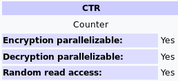

https://en.wikipedia.org/wiki/Block_cipher_mode_of_operation#Counter_(CTR)
General notes
Use an IV in addition to a counter that increments. IV is a few bytes smaller than the block to accommodate the counter.
Main benefit is parallelization (blocks do not depend on each other like in CBC)
Each keystream is different (IV + Counter) so randomization is better than ECB
Rule 0 of stream ciphers applies: Never use the same key twice per IV


Counter (CTR)
Note: CTR mode (CM) is also known as integer counter mode (ICM) and segmented integer counter (SIC) mode
Like OFB, Counter mode turns a block cipher into a stream cipher. It generates the next keystream block by encrypting successive values of a "counter". The counter can be any function which produces a sequence which is guaranteed not to repeat for a long time, although an actual increment-by-one counter is the simplest and most popular. The usage of a simple deterministic input function used to be controversial; critics argued that "deliberately exposing a cryptosystem to a known systematic input represents an unnecessary risk."[19] However, today CTR mode is widely accepted and any problems are considered a weakness of the underlying block cipher, which is expected to be secure regardless of systemic bias in its input.[20] Along with CBC, CTR mode is one of two block cipher modes recommended by Niels Ferguson and Bruce Schneier.[21]
CTR mode was introduced by Whitfield Diffie and Martin Hellman in 1979.[22]
CTR mode has similar characteristics to OFB, but also allows a random access property during decryption. CTR mode is well suited to operate on a multi-processor machine where blocks can be encrypted in parallel. Furthermore, it does not suffer from the short-cycle problem that can affect OFB.[23]
If the IV/nonce is random, then they can be combined together with the counter using any lossless operation (concatenation, addition, or XOR) to produce the actual unique counter block for encryption. In case of a non-random nonce (such as a packet counter), the nonce and counter should be concatenated (e.g., storing the nonce in the upper 64 bits and the counter in the lower 64 bits of a 128-bit counter block). Simply adding or XORing the nonce and counter into a single value would break the security under a chosen-plaintext attack in many cases, since the attacker may be able to manipulate the entire IV–counter pair to cause a collision. Once an attacker controls the IV–counter pair and plaintext, XOR of the ciphertext with the known plaintext would yield a value that, when XORed with the ciphertext of the other block sharing the same IV–counter pair, would decrypt that block.[24]
Note that the nonce in this diagram is equivalent to the initialization vector (IV) in the other diagrams. However, if the offset/location information is corrupt, it will be impossible to partially recover such data due to the dependence on byte offset.